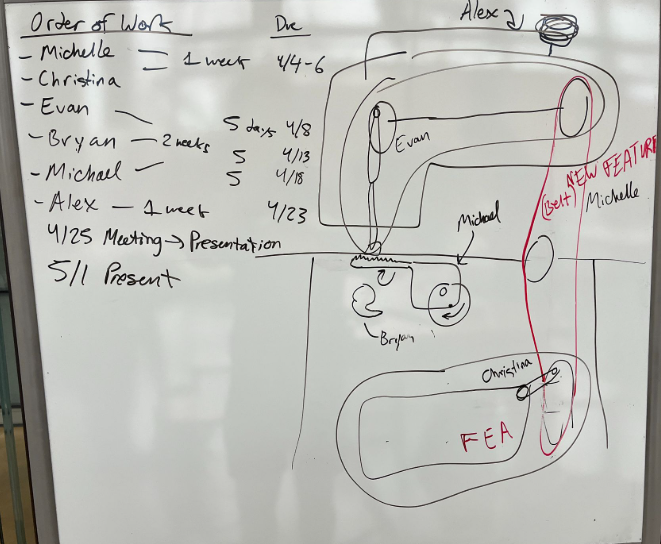

Sewing Machine Project
Project Background
This project focused on the end-to-end design and analysis of a mechanical system using SolidWorks. Working in a collaborative team environment, we modeled and assembled a fully functional mechanical system, producing detailed engineering drawings, animations, and supporting analyses. The project emphasized practical application of mechanical design principles, CAD proficiency, and clear technical communication, while simulating a real-world engineering design workflow from concept through validation.
System Description
The project involved designing and modeling a mechanically driven antique sewing machine powered by a foot-operated pump pedal. The system consisted of 30+ interrelated components, with each team member responsible for modeling multiple parts. The design incorporated realistic motion transfer using a belt/chain assembly to convert pedal input into rotational and reciprocating motion. Key animated elements included the foot pedal, drive wheel, needle mechanism, and lower stitching assembly, demonstrating the full mechanical process required to form a stitch.
Project Goals
The team aimed to explore the detailed design of the needle, thread path, and stitching mechanism, with the goal of showcasing these interactions through animation. A key objective was to design a foot-powered drive system capable of operating the entire machine. While full 3D printing of the assembly was considered, practical limitations related to part size and quantity were acknowledged. The project emphasized creating a mechanically meaningful system with real-world relevance, focusing on everyday functionality rather than high-stress structural analysis, making finite element analysis unnecessary.
Plan of Attack
Initially, this project felt a bit daunting due to the sheer number of components involved in a sewing machine. To make the problem more manageable, we spent time brainstorming and breaking the machine down into its fundamental parts and core functions. By simplifying the overall system, we were able to better understand how each component contributes to the machine’s operation. Ultimately, we organized the sewing machine into six main categories, which helped guide our design and modeling process. Within this structure, I was responsible for designing and modeling the case and thread system.
Outer Casing
This model represents the outer casing of the sewing machine, designed to provide structural support and enclosure for the internal mechanisms. The geometry was simplified from the original design to focus on overall form, mounting interfaces, and clearances, while preserving the recognizable proportions of a traditional sewing machine body. Fillets and chamfers were incorporated to improve manufacturability and create a cleaner, more refined appearance for assembly and presentation.
Bottom Section Cover
This component serves as the lower protective cover of the sewing machine, enclosing mechanisms located beneath the work surface. It shields internal components from dust, debris, and accidental contact, helping to preserve functionality and extend the lifespan of more delicate parts while also providing structural enclosure and visual continuity to the overall assembly.
Sewing Spool
This component functions as the sewing machine’s thread spool, designed to securely hold the thread while allowing for smooth, controlled unwinding during operation. The central mounting hole enables the spool to be fixed to the outer housing, ensuring proper alignment and consistent thread feeding into the machine’s internal mechanisms.
Axle
This component functions as an axle within the sewing machine assembly, providing rotational support for attached components while maintaining precise alignment. The cylindrical shaft allows for smooth rotation, while the squared ends enable secure mounting and torque transfer to connected parts, ensuring stable and consistent motion during operation.
Final Assembly
This final assembly brings together all modeled components into a cohesive, functional sewing machine system. The design integrates the machine casing, needle mechanism, thread spool, belt-driven power transmission, and foot pedal assembly into a unified structure mounted on a supporting table. The pedal-driven mechanism translates user input into rotational motion through a belt and pulley system, driving the needle operation above the work surface. The assembly emphasizes clear mechanical relationships, realistic motion paths, and proper component alignment, resulting in a complete representation of a traditional mechanically powered sewing machine.
Assembly Animation
This animation demonstrates the fully assembled sewing machine, highlighting how individual components come together into a cohesive mechanical system. The motion study illustrates the pedal-driven power transmission, where user input at the foot pedal is transferred through a belt and pulley system to drive the needle mechanism above the work surface. Overall, the animation emphasizes component alignment, mechanical relationships, and the functional flow of motion throughout the machine.
Finite Element Analysis (FEA)
Analysis Rationale
A static finite element analysis was conducted on the foot pedal support beam to evaluate its ability to withstand repeated user loading while maintaining structural rigidity. The beam was modeled using an alloy steel material and subjected to an approximate 100 lb applied load at the pedal contact points, representing realistic operating conditions. Fixed supports were applied at the table sidewall mounting locations to reflect the beam’s in-assembly constraints. The analysis ensured the beam could resist deformation and provide stable support for the pedal during use.
FEA Results
The static finite element analysis showed that the foot pedal support beam remains structurally sound under the applied loading conditions. The maximum von Mises stress reached approximately 391.7 MPa, which remains below the assumed material yield strength of 620.4 MPa, indicating that the beam operates safely within the elastic regime. The maximum displacement was approximately 5.8 mm, occurring near the center of the beam, which is acceptable for maintaining pedal stability and functionality during use. Based on the analysis, the beam is not expected to fail under the applied loading and exhibits an estimated safety factor of ~1.6. These results confirm that the beam provides sufficient strength and stiffness to support repeated user loading without permanent deformation. If additional stiffness or margin were required, potential design improvements include increasing the beam diameter or reducing the table width to shorten the effective span length.
Project Reflection
This project highlighted the importance of simplifying complex mechanical systems into well-defined subsystems in order to manage both design and analysis effectively. Modeling each component with assembly constraints in mind improved alignment, motion consistency, and overall system integration in the final assembly. Conducting structural analysis on critical load-bearing components reinforced the role of validation in mechanical design, beyond visual or geometric correctness. If revisiting the project, additional time would be spent refining tolerances, improving manufacturability considerations, and further validating load assumptions to enhance durability and realism.